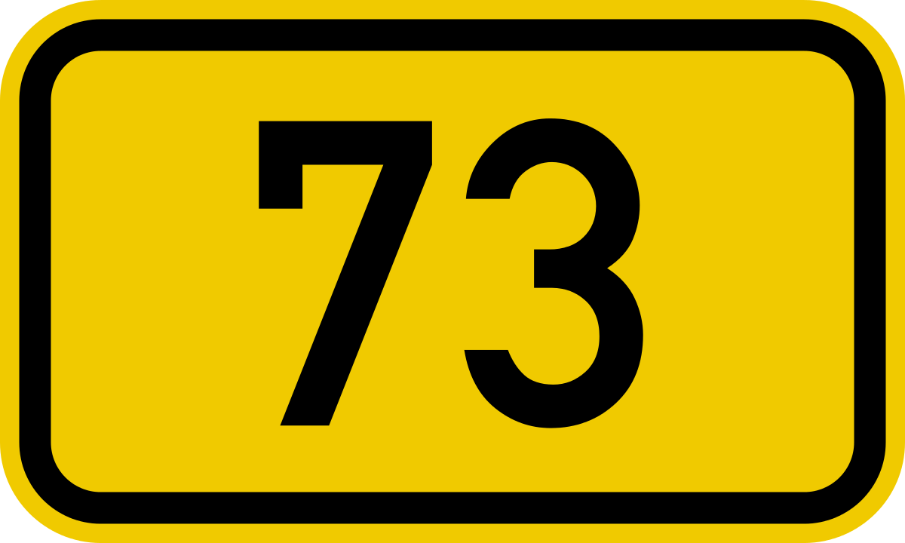

Gebrauch

Wie wird die 73 gebraucht oder was ist deren Bedeutung?
Obwohl die 73 eine spezielle Zahl ist, wird diese im Alltag und in der Wissenschaft nicht viel gebraucht. Trotzdem stellen wir jetzt euch ein paar Beispiele vor in welchen Gebieten die 73 sonst gebraucht wird und was deren Bedeutung ist.  In der Chemie zum Beispiel steht die 73 im Periodensystem für das Element Tantal. Sonst wird 073 als Vorwahl in den Regionen Rheintal bis Will (Schweiz) benutzt. Auch wird die 73 in der chinesischen Kultur benutzt in welcher sie für den Mond, Glück und Yang steht, während es in der westlichen Esoterik für den Jupiter steht.